screenshot_0 · full
[2560, 1304] → [2560, 1304] · 保留像素 100.0% · 场景 0
原图与选区

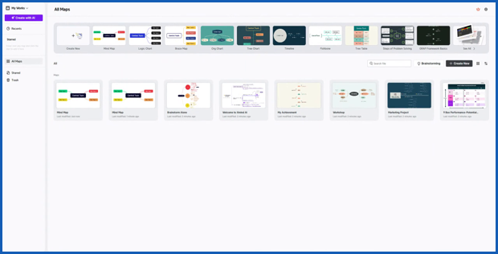
算法输出预览

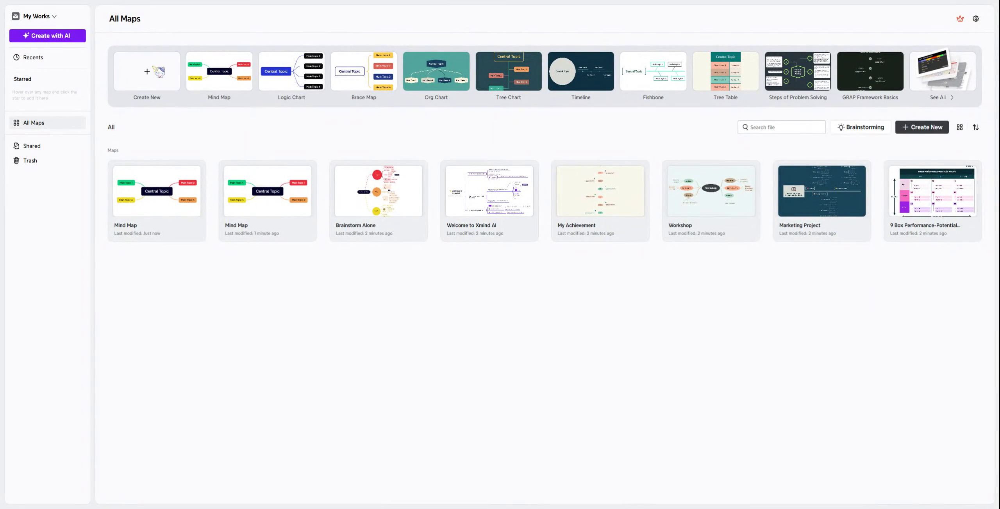
坐标：[0, 0, 2560, 1304] · 原因：first_screenshot
算法版本：experimental_theme_aware_per_step_v2。仅用于预览，生成流程未修改。
返回任务总览 · 查看全部步骤拼图 · 查看算法判断 JSON
左侧为原图预览和选区（绿色：裁剪；蓝色：保留整图），右侧为此算法的输出预览；实验版尚未用于生成。点击图片查看原尺寸；预览自动缩放。像素减少比例不等于 token 减少比例。
[2560, 1304] → [2560, 1304] · 保留像素 100.0% · 场景 0
原图与选区

算法输出预览

坐标：[0, 0, 2560, 1304] · 原因：first_screenshot
[2560, 1304] → [2560, 1304] · 保留像素 100.0% · 场景 1
算法输出预览
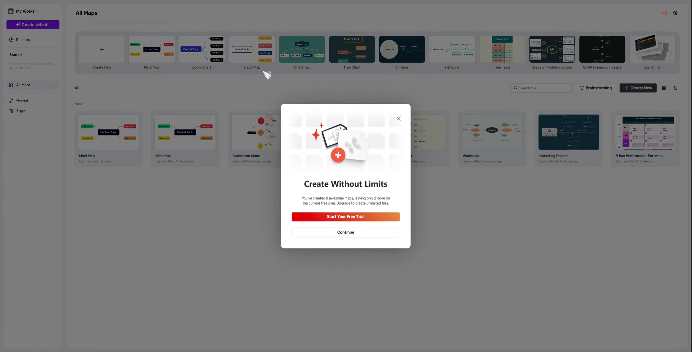
坐标：[0, 0, 2560, 1304] · 原因：large_visual_change
[2560, 1304] → [2560, 1304] · 保留像素 100.0% · 场景 2
原图与选区
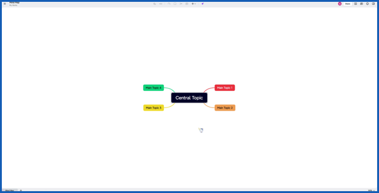
算法输出预览
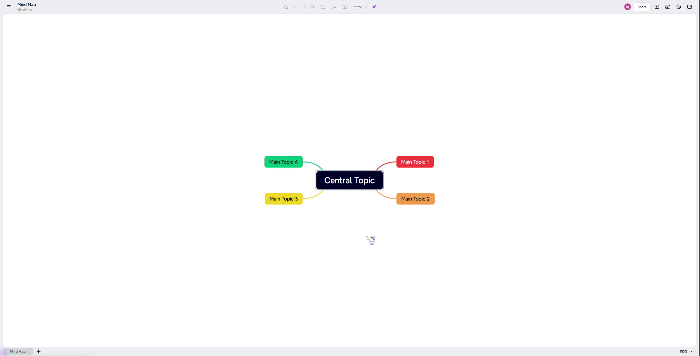
坐标：[0, 0, 2560, 1304] · 原因：large_visual_change
[2560, 1304] → [557, 378] · 保留像素 6.3% · 场景 2
原图与选区
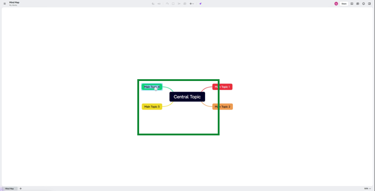
算法输出预览
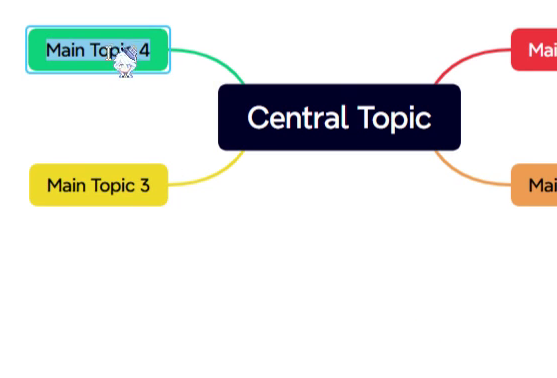
坐标：[939, 543, 1496, 921] · 原因：localized_change
[2560, 1304] → [154, 90] · 保留像素 0.4% · 场景 2
原图与选区
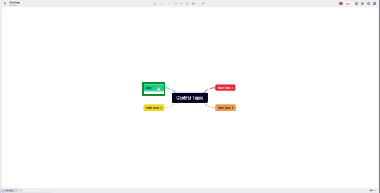
坐标：[960, 556, 1114, 646] · 原因：localized_change
[2560, 1304] → [653, 789] · 保留像素 15.4% · 场景 2
原图与选区
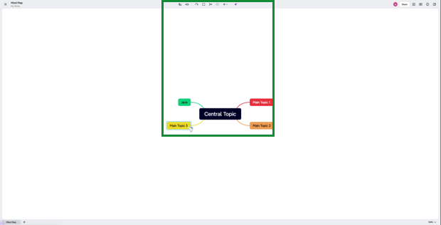
算法输出预览
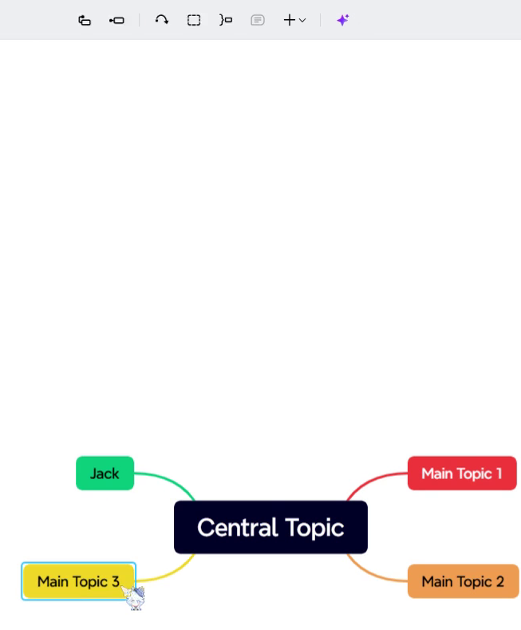
坐标：[939, 0, 1592, 789] · 原因：localized_change
[2560, 1304] → [291, 789] · 保留像素 6.9% · 场景 2
原图与选区
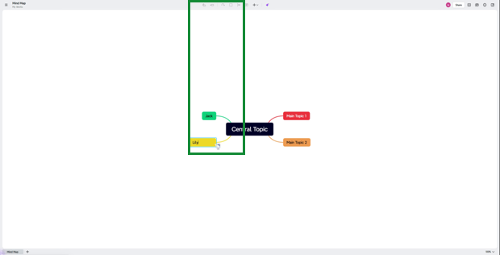
算法输出预览
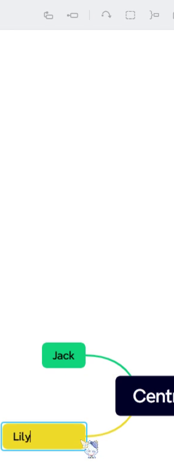
坐标：[964, 0, 1255, 789] · 原因：localized_change
[2560, 1304] → [689, 247] · 保留像素 5.1% · 场景 2
原图与选区
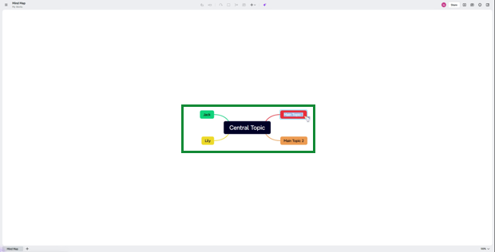
算法输出预览
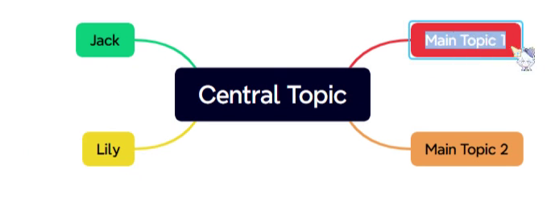
坐标：[940, 543, 1629, 790] · 原因：localized_change
[2560, 1304] → [607, 200] · 保留像素 3.6% · 场景 2
原图与选区
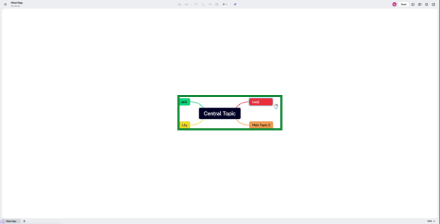
算法输出预览
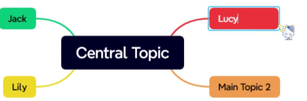
坐标：[1036, 556, 1643, 756] · 原因：localized_change
[2560, 1304] → [607, 249] · 保留像素 4.5% · 场景 2
原图与选区
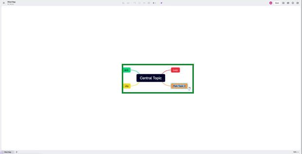
算法输出预览
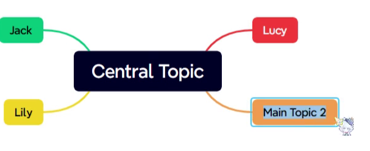
坐标：[1036, 543, 1643, 792] · 原因：localized_change
[2560, 1304] → [1488, 532] · 保留像素 23.7% · 场景 2
原图与选区
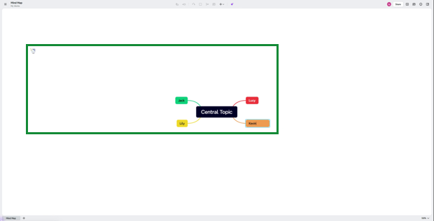
坐标：[153, 260, 1641, 792] · 原因：localized_change